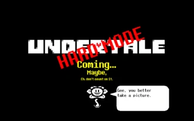
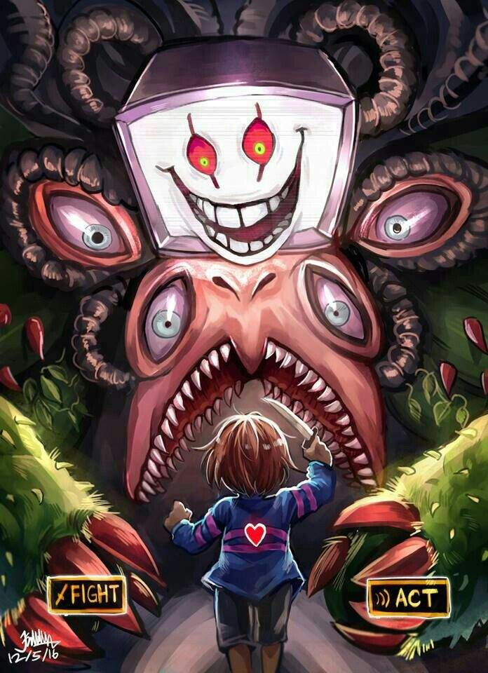
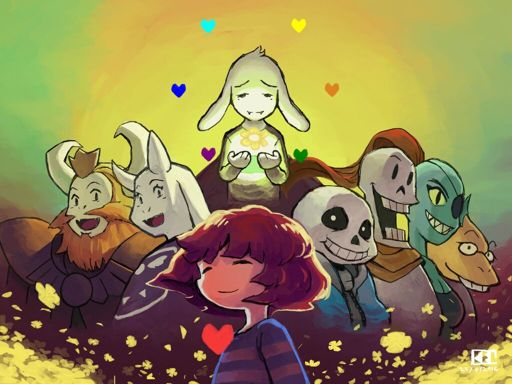
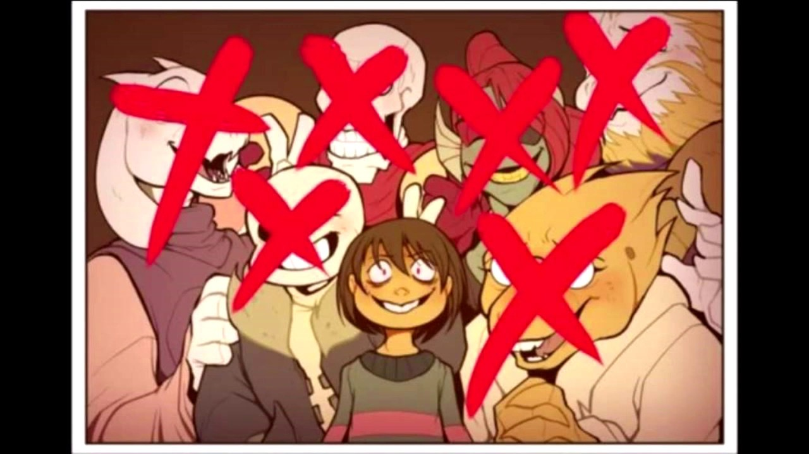

Es un RPG creado por Toby Fox, el Demo fue lanzado el 23 de Mayo del 2013, y se puede descargar gratis
desde la página oficial. El lanzamiento oficial se realizó el 15 de Septiembre del 2015 y se puede puede conseguir
una
copia del juego a través de Steam.
Hace unos meses, salió un parche no oficial que permite jugar el juego en español. Cabe aclarar que solo funciona
con las
versiones de Steam y la de la página oficial de Undertale. Así que, si no eres muy bueno en inglés, gánate un
trabajo y
compra el juego, sucio pirata.
Rutas
Modo dificil
El Modo Difícil (Hard Mode en inglés)
es un modo de juego opcional, que se desbloquea al nombrar al humano caído "Frisk".
Sin embargo el modo difícil sólo dura hasta el final de Las Ruinas. La pelea al final será con Toriel y cuando se termine la lucha, vendrá el Annoying Dog, anunciando el fin del modo difícil para gran disgusto de Toriel (y probablemente para el jugador también).
Si intentas escapar de Las Ruinas durante el modo difícil editando la ubicación del jugador en su archivo de guardado, o mediante la intervención directa con programas (Cheat Engine, etc.) hará que el juego se cierre de inmediato y se pondrá en negro al cargar el
área especificada, haciéndolo imposible jugar hasta que se vuelva a reiniciar por completo el juego.
Ruta Neutral

La Ruta Neutral es una de las tres rutas principales en Undertale, y la que normalmente los jugadores atraviesan cuando juegan por primera vez. En esta ruta, el jefe final es Flowey; aunque después de haber vencido una vez a Flowey, solo destruirá el alma
de Asgore y su lucha no ocurrirá.
Método
Si perdonas a Flowey después de vencerlo en una Ruta Neutral, aparecerá después de la llamada del final de Ruta y te dará detalles sobre la/s pista/s para el siguiente requisito para el Final Pacifista Verdadero. Estas pistas dependerán de que requisitos te hayan faltado
en tu partida. Puedes volver a cargar tu archivo de guardado o reiniciar el juego para cumplir con los requisitos que te faltan.
Pantalla de menú en la parte final de la Ruta Pacifista, con todos los personajes con los que se hizo amistad.
Ruta Pacifista Verdadera

La Ruta Pacifista Verdadera es una de las tres rutas principales del juego y conduce al "mejor" final de Undertale, conocido también como
"El Final Verdadero".
Método
Si perdonas a Flowey después de vencerlo en una Ruta Neutral, aparecerá después de la llamada del final de Ruta y te dará detalles sobre la/s pista/s para el siguiente requisito para el Final Pacifista Verdadero. Estas pistas dependerán de que requisitos te hayan
faltado en tu partida. Puedes volver a cargar tu archivo de guardado o reiniciar el juego para cumplir con los requisitos que te faltan.
Si matas a Flowey y no mataste a ningún otro monstruo, regresarás a la pantalla de inicio. Si quieres continuar, la partida comenzará antes de la batalla contra Asgore. En este punto, podrás completar los requisitos de amistad con Papyrus, Undyne y Alphys.
Ruta Genocida

La Ruta Genocida (a veces llamada Ruta Despiadada), es una de las tres rutas principales en Undertale. Puede ser alcanzada en cualquier partida sin requisitos previos, a pesar de que alguna subsecuente ruta pacifista tendrá su epílogo ligeramente
alterado, incluso después de un Verdadero Reinicio.
Método
La Ruta Genocida se consigue matando a todos los enemigos en cada área: Las Ruinas, Snowdin, Waterfall y Hotland/NÚCLEO (para esta ruta, Hotland y el Núcleo comparten el mismo contador de enemigos faltantes)
Todo comenzó porque sentía curiosidad. Curiosidad de qué pasaría si los mataba. "No me gusta esto", me decía. "Solo lo hago porque quiero saber qué pasa." Ja ja ja...
¡Qué excusa! Tú más que nadie debe saber lo satisfactorio que es actuar de esta manera. Al menos estamos mejor que esos psicópatas que MIRAN
lo que pasa... Esos patéticos seres que quieren verlo, pero que son demasiado débiles para hacerlo por sí mismos. Apuesto a que hay alguien
observando en este momento, ¿verdad?
— Flowey en el Nuevo Hogar, explicando por qué planeó hacer una Ruta Genocida
Si se continúa la Ruta Genocida hasta el final, Chara en persona aparecerá y le hablará, no al humano, sino al jugador, explicándole que la Determinación, el LOVE y demás fue lo que lo trajo a la vida de nuevo, tras esto, le
ofrecerá al jugador destruir el mundo, sea cual sea la elección, el jugador destruirá el mundo y el juego se cerrará.